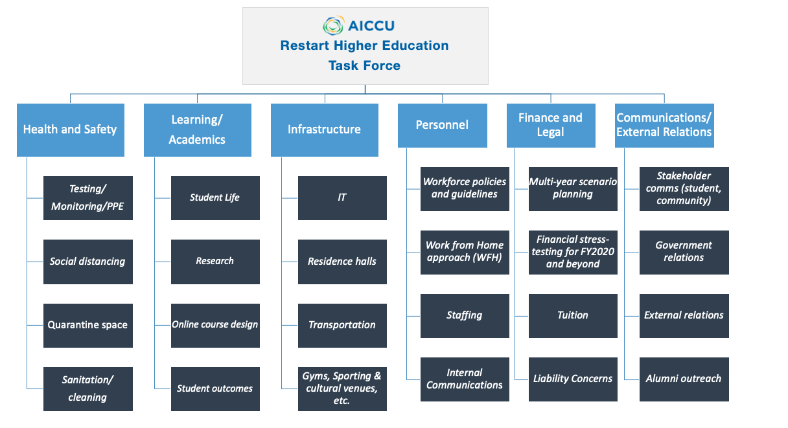

AICCU Restart Higher Education Task Force
Last Updated: 11 May, 2020
Overview
Over the next three to four weeks, we will be working quickly to develop checklists/best practices for what a restart would entail for our colleges and universities within the state.
0.1 Guidelines
- The general guidelines will not be prescriptive. Instead, the guidelines are designed to help universities and colleges consider all aspects of a restart.
- Each university and college will need to tailor their restart based on their own institution’s unique activities and students as well as within the guidelines from counties and the state. Our hope is that the end-product will be comprehensive checklists to help our diverse institutions plan for restart safely and smartly on our campuses within the guidelines from our counties and the state.
- Additionally, we will share the document with Lande Ajose in the Governor’s Office to inform them our efforts, the critical process we have undertaken as institutions to ensure the health and safety of our students and community; and to inform their decision making process as they develop guidance.
In short, we know reopening our campuses will required changing current operations to ensure the safety and ability of us to continue to deliver high quality higher education.
0.2 Focus Areas
We will focus our efforts on six areas:
